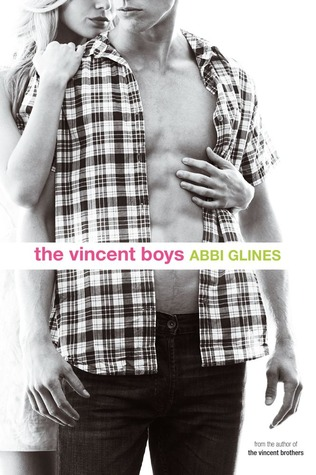

Serie The Vincent Boys

Beau
Ser la chica buena no es tan bueno como pretende ser.
Ashton Gray se ha cansado de jugar esa parte para complacer a sus padres, y para ser digna
del príncipe azul de la ciudad, Sawyer Vincent. Tal vez por eso ella se permitió pasar el
tiempo con el primo de Sawyer, Beau, mientras él está fuera en un campamento de verano con
su familia. Beau no tiene nada que ver con su novio perfecto. Él es el más sexy hombre que ha
visto, peligroso de formas que sólo había soñado, y el chico del cual debe permanecer alejada.
Beau nunca envidió a Sawyer por sus amorosos padres, su casa grande y bonita, o su posición de mariscal
de campo. Él lo quiere como un hermano. Razón por la cual ha intentado todo lo posible para mantener
su distancia de la novia de Sawyer. Incluso si él la ha amado desde la edad de cinco años, Ashton
es la chica de Sawyer, por lo tanto, está fuera de los límites.
Sin embargo, cuando Sawyer se va
en el verano, Ashton, la chica por la que Beau movería cielo y tierra , decide que quiere meterse
en problemas.
¿Es que vale la pena perder su primo por ella?...Demonios, sí.